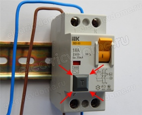

Цены на электрику квартиры частного электрика.
Качественный электромонтаж в Санкт-Петербурге и ленобласти, стаж 12 лет. Частный электрик, недорого и качественно.
Тел. 8 904 642 08 57 Николай.

Вы, наконец-то, стали счастливым обладателем долгожданных своих квадратных метров
Или затеяли капитальный ремонт в уже имеющейся квартире?
Безусловно, это радостное событие, но, сколько еще предстоит сделать для полноценного счастья! Лиха беда начало! Теперь, самое главное, со всей ответственностью подойти к обустройству собственного жилища. Чтобы сделать все безупречно раз и навсегда, а не капиталить каждый год.
Одним из важных, наиглавнейших аспектов ремонта, является проведение электрики. Куда ж без нее, родимой?! Каким бы простым это искусство не казалось на первый взгляд, справиться с ним могут только настоящие профессионалы.
Однако многие хозяева, опасаясь заоблачной цены на электрику квартиры, предпочитают сэкономить и сделать все своими руками. «Молодец! Похвально! Настоящий мужик!» - скажете вы.
|
Вариант квартиры. |
Цена в руб. за электрику под ключ. |
|
1- комнатная квартира. |
От 20000 |
|
2- комнатная квартира. |
От 26000 |
|
3- комнатная квартира. |
От 32000 |
|
4- комнатная квартира. |
От 37000 |
 Но подождите, не спешите радоваться – не все так просто. Вы уверены, что все точно рассчитали, и это действительно экономия?
Но подождите, не спешите радоваться – не все так просто. Вы уверены, что все точно рассчитали, и это действительно экономия?
А как же постоянные доработки и переделки, которые, я вас уверяю, обязательно будут?
Ведь не может человек без специального образования и соответствующего опыта работы провести идеальную сеть электроснабжения! Да черт с ней, с идеальной! А вы подумали о более страшных серьезных последствиях?
Электричество – это ведь не шутки!
Тут достаточно одного короткого замыкания, одного неправильно проложенного проводка и: вы можете поплатиться за свою экономию жилищем или даже собственной жизнью. Наверняка вы смотрите новости, освещающие участившиеся пожары домов именно по причине сгоревшей проводки. Ну и к чему вам эти ужасы? Быть может лучше довериться профессионалу? В конце концов, не такие уж высокие цены на электрику квартиры!
А как же найти этого выдающегося профессионала? – спросите вы. Что ж, вполне дельный вопрос. Ведь в наше время кампаний и частников по электроснабжению просто пруд пруди. Как же не затеряться в огромном ассортименте предложения и выбрать по-настоящему дельного человека? Не спешите идти в раскрученную фирму, название которой вертится на языке. Зачастую в таких фирмах приходиться платить вовсе не за качество работы, а как раз таки за нашумевший бренд. Именно по этой причине цены на электрику квартиры у частных электриков гораздо ниже, в то время как качество на уровне. Ну и зачем платить больше?
Я давно занимаюсь проведением электрики, и за время моей работы не было претензий и нареканий.
Все клиенты остались довольны и качеством работы, и ценой на электрику квартиры. Выполняя свою работу я, прежде всего, прислушиваюсь к вашему мнению – ведь, как известно, клиент всегда прав. Вы сами выбираете, какой способ проведения электрики вам больше подходит, количество розеток, выключателей и т.д. Сообразно с вашими пожеланиями и своими знаниями я составляю проект и схему разводки электрики в квартире.
Большинство людей заблуждается думая о необязательности своего участия в разработке схемы проведения электрики. Они лишь машут руками и пожимают плечами – мол, делайте, как хотите, вам виднее – вы ведь электрик. Нам то, конечно, виднее, вот только жить в этом доме вам. Вам расставлять мебель, покупать бытовую технику. Именно поэтому мы стараемся сделать так, как будет удобно вам. Хорошо подумайте чего конкретно вы хотите. Представьте конечный результат ремонта – куда поставите шкаф, кровать, где будет телевизор. Все это является необходимым условием грамотного проведения электрики. Чтобы не получилось потом так, что розетки загораживает шкаф, по квартире разбросаны удлинители и пилоты, а электрик в итоге крайний. Нужно изначально представлять итоговую картинку. Когда вы сами знаете, чего вы хотите, электрику гораздо легче вас понять и достигнуть взаимопонимания.
Так же вам надо будет определиться со способом разводки электрических сетей. Их на сегодняшний день два:
- Крепление проводов на стенах с соединением в распределительных коробках.
- Монтаж проводов в пластиковых трубах, пущенных по полу перед его заливкой.
Ну, можно еще просто пустить изолированные провода по стенке дедовским способом. Это конечно шутка и пережитки прошлого. В наше время все гораздо аккуратнее и надежнее. Хорошо, что прогресс не стоит на месте. Не буду повторяться, расписывая досконально способы разводки, интернет буквально кишит этой информацией.
Помимо всего прочего хотелось бы отдельно сказать несколько слов об экономии.
Не стоит покупать самые дешевые розетки и выключатели. Они вам будут служить немало лет – так может лучше купить нормальные качественные изделия среднего класса, а не останавливать свой выбор на дешевом китайском ширпотребе?
И самое главное, не бойтесь задавать вопросы. Постараюсь проконсультировать вас по всем интересующим аспектам. Ведь капитальный ремонт делается обычно раз в жизни, и имеет целью своей получить все и сразу. Не разменивайтесь по мелочам, и хорошего вам ремонта!
 Поменять проводку в квартире.
Поменять проводку в квартире. Сколько будут стоить материалы.
Электрика в загородном доме стоимость работ.

Замена электропроводки в панельном доме.
Расценки на электропроводку квартир.
Замена проводки в хрущевке.
Электромонтаж в частном доме.
Электрика в загородном доме.
Сколько стоит замена электропроводки в двухкомнатной квартире?.
Электрик в новостройку однокомнатная квартира недорого.

Сколько стоит поменять электропроводку в 3-х комнатной квартире.